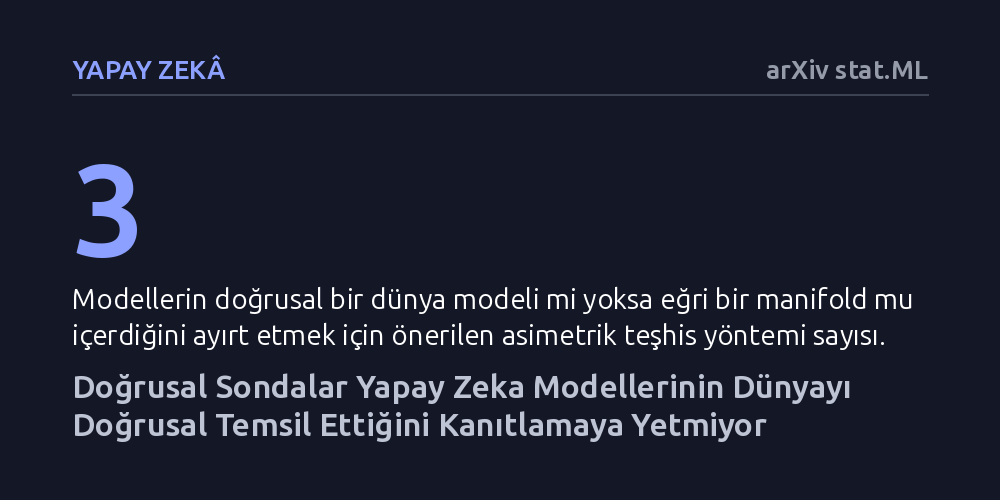

YAPAY-ZEKA · arXiv stat.ML · 2026-10-20
Araştırmacılar, yapay görme modellerinde kavramların doğrusal sondalarla çözülebilmesinin gerçekten doğrusal bir temsil kanıtı olup olmadığını inceledi. Deneyler, bu testlerin aşırı hoşgörülü olduğunu ve yüksek doğruluk oranının modelin sanıldığı gibi doğrusal bir dünya modeline sahip olduğunu kanıtlamadığını ortaya koydu.
Yapay zekanın kavramları insan zihnine benzer şekilde düzenli ve doğrusal boyutlarda öğrendiği varsayımını sarsarak modellerin iç yapısını anlama yöntemlerimizi sorgulatıyor.

Son yıllarda derin öğrenme araştırmacıları, yapay zeka modellerinin iç katmanlarında dünyayı nasıl temsil ettiğini anlamak için yaygın bir varsayıma sarıldı: Doğrusal temsil hipotezi. Bu görüşe göre gelişmiş yapay görme modelleri; renk, boyut, konum veya nesne türü gibi soyut kavramları kendi iç uzaylarında düz, bağımsız eksenler boyunca düzenler. Araştırmacılar bu düzeni doğrulamak için genellikle "doğrusal sonda" adı verilen basit sınıflandırıcılar kullanır. Eğer basit bir sonda modelin iç katmanlarındaki bir özelliği kolayca okuyabiliyorsa, modelin o kavramı gerçekten doğrusal ve düzenli bir dünya modeli halinde öğrendiği kabul edilir.
Ancak bu yaklaşım kritik bir mantıksal zayıflık barındırıyor. Bir bilgiyi basit bir matematiksel süzgeçle ayıklayabilmek, o bilginin arkasındaki yapının gerçekten sade ve doğrusal olduğu anlamına gelmeyebilir. Araştırmacılar, mevcut analiz yöntemlerinin aşırı hoşgörülü olduğunu ve yapay zekanın kavramları nasıl öğrendiğine dair yanıltıcı bir güven duygusu yarattığını öne sürüyor.
Matematiksel olarak, yeterince zengin veya yüksek boyutlu herhangi bir özellik haritası —hatta tamamen rastgele üretilmiş bir harita bile— bilgiyi doğrusal olarak ayrıştırmaya imkan tanır. Dolayısıyla doğrusal bir sondanın yüksek başarı göstermesi iki taban tabana zıt geometriyle de uyumludur: Model ya kavramların baskın olduğu düzenli bir doğrusal dünya modeli kurmuştur ya da verileri çok daha geniş, kıvrımlı ve karmaşık bir yüzeye hapseden bir çekirdek makinesi gibi davranmaktadır.
Bu iki durumu birbirinden ayırmak hayati önem taşır; çünkü sondanın göremediği o eğri ve dik yapılar, modelin eğitim dağılımı dışındaki yeni durumlara uyum sağlama, dayanıklılık ve kompozisyonel aktarım becerisini doğrudan belirler. Yazarlar bu iki geometriyi ayırt edebilmek için üç asimetrik teşhis yöntemi öneriyor: Tersine tahmin edilebilirlik, spektral yoğunlaşma ve dağılım dışı genelleme. Bu testler, önce gerçek matematiksel yapısı kesin olarak bilinen kontrollü bir simülasyonda doğrulanarak sınandı.
Geliştirilen teşhisler SVG-World veri setinde önceden eğitilmiş altı görsel dönüştürücü modele ve CelebA veri setinde iki modele uygulandığında dikkat çekici sonuçlar elde edildi. Modellerin iç yapısı tamamen rastgele bir çekirdekten daha fazla yapı sergilese de, araştırmacıların umduğu gerçek bir doğrusal dünya modelinin oldukça gerisinde kalıyordu.
dSprites, 3D Shapes ve MPI3D gibi temel kıyaslama veri setlerinde yapılan deneyler de bu tabloyu netleştirdi. Bir kavramın doğrusal olarak çözülebilme başarısı ile o kavramın modelin temsil varyansındaki asıl ağırlığı birbirinden tamamen koptu. Yani bir model bir özelliği basit bir sondayla mükemmel şekilde dışarı aktarsa bile, o özellik modelin iç geometrisinin baskın ve belirleyici bir parçası olmayabiliyor.
Bu bulgular, yapay zekanın iç dünyasını anlamak için neredeyse standart hale gelmiş olan doğrusal sonda metodolojisinin tek başına yetersiz olduğunu gösteriyor. Modellerin verileri kavramsal düzeyde düzenli eksenlere ayırdığını iddia etmek için sadece ileriye dönük bir sınıflandırıcının başarısına bakmak yanıltıcı çıkarımlara yol açıyor.
Gelecekte daha güvenilir, beklenmedik durumlarda çökmeyen ve genelleme yeteneği güçlü yapay zeka sistemleri geliştirmek istiyorsak, modellerin iç uzayındaki eğri ve karmaşık geometrileri görmezden gelen kestirme ölçümlerden vazgeçmemiz gerekiyor. Temsilleri analiz ederken bilginin sadece dışarıdan okunabilirliğine değil, modelin genel temsil uzayındaki gerçek geometrik ağırlığına odaklanmak büyük önem taşıyor.